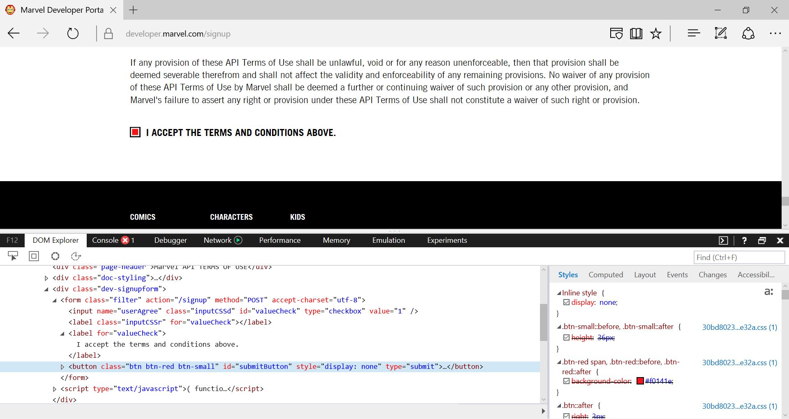

MARVEL
|
API "How-To" Guide |
The Marvel API is a phenomenal tool that allows developers to fetch information about all Marvel comics, characters, and writers. The Marvel API also allows some access to images related to each of those categories. All requests to the Marvel API must be GET requests and the results are returned in JSON format.
Click here to vist the official documentation page for the Marvel Comic API. There, you can sign-up for a developer account, get your API key, access several how-to guides, and use the interactive API tester.
The "How-To" Guides on Marvel's site are farily clear, and wherever they might be lacking in examples, their comprehensive interactive API tester should enable the average developer to figure out how to use the Marvel API. However, as noted in the official documentation, the Marvel API and developer websites are still in its Beta phase, and so there are still some problems that you are going to encounter. These problems are not covered in any of the official documentation. First, this guide will make your way around a few bugs in Marvel's developer websites, listed below:
Once you have your Marvel API key and you have access to the Interactive API Tester, you will be ready to start figuring out what you can do with the Marvel API. From that basepoint, this guide will discuss the following:
Marvel's website has a guide on how to get started with using the Marvel API, which can be found here. Naturally, the first step is to create a developer account, which you can do by clicking here. Complete and complete the registration using either your Facebook account, Google account, or e-mail address. Once you have sucessfully registered, you will receive a confirmation e-mail. You will need to click the link in that email to activate your developer account.
While setting up your developer account is as straight-forward as it is on any other website, the process of requesting an API key will likely be snarled by an elusive bug. After you have a developer account, you can either click on the "Get A Key" tab at the top of Marvel's page, or click here.
Like you have probably seen a thousand times before, you will be presented with the Marvel API "Terms of Use", and you must read all the way to the bottom and then check the box confirming that you have read and agree to the terms. However, once you have checked that box, you will probably find yourself searching high and low for the "Accept" button. This is where I can save you some time and frustration.
Whether it was designed as an additional security measure to prevent bots from continuously requesting keys, or simply an oversight, Marvel has written their page such that the "Accept" button is hidden by default. In order to reveal the button so you can accept the terms and get your API key, you must right click on the checkbox and click "inspect element". Alternatively, you may press the F12 key to bring up the developer tools, however the "inspect element" method will take you directly to the appropriate lines of the HTML code.
| Before | After | |
|---|---|---|
|  | =>=>=> | |
| as of March 1st, 2017 |
Once you have opened the developer tools on your favorite browser, turn your attention to the line of code highlighted in the Before image above. This is the code for the "Accept" button, and you should notice that it has been created with a display style of "none". All you need to do is click (or double click) on the word "style", so that it is selected, and then delete it. If you have done it correctly, the "Accept" button should now be visable, like it is in the After image above. Now, simply click the "Accept" button and you should receive your API key.
Now that you have a developer account and Marvel has assigned you an API key, you will probably want to start seeing what all the Marvel API can do. The best place to get some real, hands-on practice with the Marvel APIs is the Interactive API Tester, which can be found here.
However, once you reach that site, you will probably start to get the feeling that something is missing . . . again. If you access this page from any link on the Marvel site, you should notice that the interactive API tester does not appear. This is because all of the links to the Interactive API Tester on Marvel's website were created with the https:// prefix. The plug-in Marvel is using for the interactive tool causes a security issue, and so the secured https:// prefix prevents it from rendering.
| HTTPS:// | HTTP:// | |
|---|---|---|
| =>=>=> | ||
| as of March 1st, 2017 |
Instead, all you have to do is click in your address bar and delete the "s" so that the path begins with http://, or click here. You can also go to your favorite search engine and navigate to the Interactive API Testing page from your search results.
Whichever method you chose, you should now be able to see and use Marvel's interactive API tester.
After you have created a developer account you should take some time to re-read Marvel's "Terms of Use" (located here) and read their policies for linking and attribution (located here). The two biggest points that you need to pay attention to are: 1) You cannot charge any money in association with your use of the Marvel API! 2) You must attribute to Marvel anytime you use data that came from their API!
**Violating the "Terms of Use" or failing to attribute will result in your account/key being banned, and/or legal action. Don't Do It!**
Now that you have your Marvel API key and you have found your way around the bugs in the interactive API tester, you are ready to start making some calls to the Marvel API. This section should give you a better idea about the types of calls you can make and what to do when something goes wrong.
On Marvel's "General Information" page (located here) it tells you that the base gateway for the Marvel API is: http(s)://gateway.marvel.com/. However, if you try to write your calls directly to this path, you will experience a host of problems that will not be obvious at first. Ultimately, your request will fail because Marvel has left out some important information, like the version folder, and the public folder. Instead, the proper basepoint for calls to the Marvel API should be:
http(s)://gateway.marvel.com/v1/public/.
All resources that make up the Marvel API are located at this root address, but you will also need to append your API key to the end of the request in the format ?apikey={YOUR API KEY HERE} There are a total of 6 types of resources available:
|
|
(Returns a list of Characters) | https://gateway.marvel.com/v1/public/characters |
|
|
(Returns a list of Comics) | https://gateway.marvel.com/v1/public/comics |
|
|
(Returns a list of Creators) | https://gateway.marvel.com/v1/public/creators |
|
|
(Returns a list of Comic Series) | https://gateway.marvel.com/v1/public/series |
|
|
(Returns a list of Comic Stories) | https://gateway.marvel.com/v1/public/stories |
|
|
(Returns a list of Comic Events) | https://gateway.marvel.com/v1/public/events |
The default limit to the number of results in each list is 20. In order to get more (or less) than 20 you must include the variable definition of limit={Desired Limit}& before you append your API key to then end of the call (be sure not to leave off the ampersand). The maximum number of results that can be called at once is 100. In order to move beyond the initial "page" of results, you must change the "offset". This is done by including the variable definition of offset={Desired Offset}& in the same manner as the limit.
Beyond this initial structure, to access a single resource of any of the above types, you will need the ID code for that resource (see A Note About Marvel ID Codes, below). However, once you have found the appropriate ID for the desired resource, you can then also access any other resources that are linked to it. For example, say you have an ID code for a character. The Marvel API allows you quick access to any of the individual comics in which that character appeared, or events with which they have been involved. The complete request for a list of comics in which Iron Man (Character ID # 1009368) would look like this:
https://gateway.marvel.com/v1/public/characters/1009368/comics?api={Your Public API Key}
If you wanted to increase the limit from 20 results, you would make a call like the following:
https://gateway.marvel.com/v1/public/characters/1009368/comics?limit=100&api={Your Public API Key}
If you then wanted to navigate past the first "page" of 100 results, you would need to set the offset like this:
However, say you changed the offset without changing the limit. By default the results will be displayed 20 results at a time, so you will be seeing the results from the value immediately after the offset to the offset plus 20. That call would look like this:
https://gateway.marvel.com/v1/public/characters/1009368/comics?offset=100&api={Your Public API Key}
If you have any issues with the calls you are trying to make, go back to the interactive API tester (here, for your convienence), and double-check the syntax of your call against the call generated by the interactive tester.
In order to access an individual resource under any of the above-listed types, you must include the unique ID number assigned to it by Marvel. This means that each individual Character, Comic, Creator, Comic Series, Comic Story, and Comic Event has its own ID code which you will need to make any calls to the respective resource. Unfortunately, Marvel has not provided no master list or dictionary file to quickly determine the ID for any of its resources.
Therefore, there are only two ways to determine the ID for a resource. The first way is to go to the Marvel Interactive API tester and query by name in the appropriate tester. Next, you will need to navigate the results to find the resource you are looking for, and copy down the ID code. This will work just fine if you are looking for a single resource where you know the search term with a high degree of specificity. However, if you need to get an entire list of resources, this would be a slow and tedious way to do it. Instead, you should write a JavaScript function that makes requests and perhaps have that function write the IDs to a text document for quick reference. It is likely that you will be needing the same IDs numerous times in a single project, and you do not want to keep having to search for them over and over again.
There are a few differences between Client-side requests and Server-side requests of which you should be aware.
All Client-side requests must be made from a pre-authorized website URL. You can add or remove these pre-authorized URLs at any time by going to the "My Developer Account" page on the Marvel website, or by clicking here. Half-way down that page, you will find the "Your Authorized Referrers" section, where you can add and remove authorized clients. When making Client-side requests, you only have to append your public API key to the end of the call like in each of the examples above.
Server-side requests requre slightly more. First, you will need to include a time-stamp. This is done by appending the variable declaration ts={number}&. To my knowledge, this can be any number. Next, you will need to append your API key like in each of the examples above. However, when submitting Server-side requests, you must also provide a hash. This hash is the MD5 digest of your time-stamp, your private API key, and your public API key. The easiest way to figure out your hash is to click here. Once on that site, you should change the drop down menu to "MD5". Next, enter your time-stamp, followed by your private API key, followed by your public API key. Do not leave any spaces or characters between any of these numbers. After all of your information is entered, simply click the "Hash" button. The value that is returned will need to be passed to the API call by setting the hash equal to that value. For example, a complete call for the list of comics in which Iron Man appears from a server would look like the following (and you can compare it to the one above):
Thank you for taking the time to read my guide on getting started using the Marvel API. I hope this guide has helped you to become more familiar with the Marvel API, and hopefully, save you a whole lot of headache and googling. While the Marvel API seems to have great documentation on its face, as I have shown you, there are a few pitfalls to be aware of. Most of what I have presented in this guide cannot be found anywhere in the official documentation, with the main exception being the differences between Client-side and Server-side calls to the Marvel API. However, I have still improved upon the Marvel documentation on those topics by providing you with a simple way to calculate your hash for making requests.